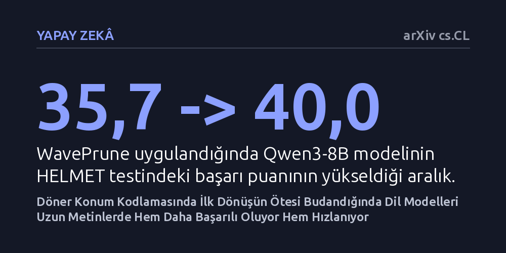

YAPAY-ZEKA · arXiv cs.CL · 2026-10-08
Araştırmacılar, büyük dil modellerinde kelimelerin sırasını kodlayan döner konum yöntemindeki periyodik tekrarların dikkat dağınıklığına yol açıp açmadığını inceledi. Kodlamayı ilk dönüş periyoduyla sınırlandırmanın, modellerin uzun metinleri anlama başarımını yükselttiği ve işlem hızını 1,24 kata kadar artırdığı görüldü.
Yapay zeka modellerinin uzun belgeleri hatasız işlemesi için vazgeçilmez sanılan matematiksel yapının büyük bölümünün aslında gereksiz olduğunu ve performansı bozduğunu gösteriyor.

Büyük dil modelleri bir metni işlerken kelimelerin cümle içindeki sırasını bilmek zorundadır. Günümüzün popüler modelleri bu sırayı takip edebilmek için "Döner Konum Kodlaması" (RoPE) adı verilen ve kelime vektörlerini belirli açılarla döndüren bir matematiksel yöntem kullanır. Bu yöntem sayesinde model, iki kelimenin birbirine göre ne kadar uzakta olduğunu açısal farklardan anlayabilir.
Ancak dairesel hareketin doğası gereği 360 derecelik tam bir tur tamamlandığında başlangıç noktasına geri dönülür. Bu durum, birbirinden çok uzakta olan iki kelimenin açılarının örtüşmesine ve modelin dikkat mekanizmasında sahte benzerlikler algılamasına yol açar. Özellikle on binlerce kelimelik uzun metinlerde bu konum örtüşmesi, modelin odağını dağıtarak metnin kritik kısımlarını gözden kaçırmasına sebep olabiliyor.
Araştırmacılar bu sorunu çözmek için "WavePrune" adını verdikleri bir budama tekniği geliştirdi. Bu teknik, modelin konum kodlamasındaki her bir kanalı yalnızca ilk tam dönüş periyoduyla sınırlıyor; ilk turun ötesine geçen dönme hareketlerini ise tamamen kesip atıyor. Böylece modelin kafasını karıştıran sahte periyodik benzerlikler daha baştan engellenmiş oluyor.
Ekip bu fikri doğrulamak için yöntemi iki farklı senaryoda sınadı. İlk olarak, hiçbir ek ince ayar veya yeniden eğitim yapmadan beş farklı popüler dil modeline doğrudan WavePrune tekniğini uyguladılar ve modellerin uzun bağlam performansını HELMET adı verilen zorlu bir test kümesinde ölçtüler. İkinci olarak, yöntemi sıfırdan eğitilen modellerde deneyerek eğitim sırasında ve modelin alışık olduğundan daha uzun metinlerdeki doğrulama kaybını incelediler. Ayrıca 32.000 belirteç uzunluğunda özel donanım çekirdekleriyle çalışma hızını test ettiler.
Elde edilen sonuçlar, ilk turun ötesindeki dönmelerin modele fayda değil zarar verdiğini ortaya koydu. Test edilen beş modelden dördünde, hiçbir ek eğitim yapılmamasına rağmen uzun metin anlama başarısı belirgin şekilde arttı. Örneğin Qwen3-8B modelinin HELMET başarı puanı 35,7 seviyesinden 40,0 seviyesine yükseldi. Sıfırdan yapılan eğitimlerde de yöntem, modelin metin uzadıkça gösterdiği hata payını düşürdü.
Metodun getirdiği bir diğer önemli kazanım ise donanım hızında görüldü. Her bir kanalın ilk dönüşle sınırlanması, dikkat mekanizmasında yerel bir kayan pencere etkisi yaratarak hesaplama tasarrufu sağladı. Araştırmacıların geliştirdiği grafik işlemci çekirdekleri sayesinde, 32.000 belirteçlik bağlamda FlashAttention-2 standardına kıyasla metni ilk okuma aşamasında 1,15 kat, cevap üretme aşamasında ise 1,24 kat hızlanma elde edildi.
Yapay zeka camiasında uzun süredir döner konum kodlamasının dairesel ve periyodik yapısının bütünüyle vazgeçilmez olduğu düşünülüyordu. Bu çalışma, ilk dönüş periyodunun ötesindeki dalgalanmaların modele fayda sağlamaktan ziyade gürültü ürettiğini gösteriyor. Yazarların ifadesiyle, "RoPE'un temel kabul edilen periyodik yapısı, ilk dönüş periyodunun ötesinde büyük ölçüde gereksizdir."
Bu bulgu, gelecekteki dil modellerinin uzun belgeleri, kitapları veya geniş kod tabanlarını analiz ederken hem daha az bellek ve işlem gücü harcayabileceğini hem de dikkat dağınıklığı yaşamadan daha doğru sonuçlar üretebileceğini gösteriyor. Yine de yöntemin henüz test edilmemiş farklı model mimarilerinde nasıl sonuç vereceğini görmek için bağımsız doğrulamalara ihtiyaç var.